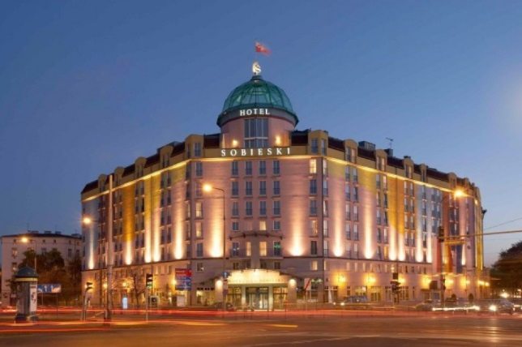
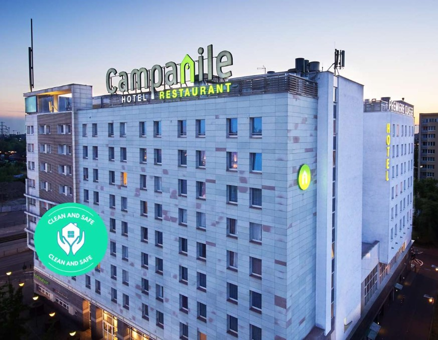
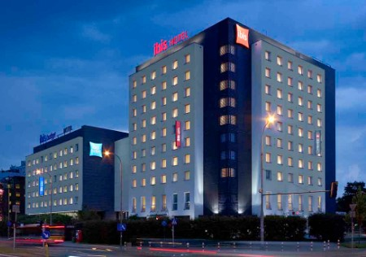

The IMMUNO-model Third Annual Conference takes place on the 13th and 14th May 2025.
Registration of participants begins on Tuesday, May 13, from 8:30 am.
The venue of the conference is the University of Warsaw Biological and Chemical Research Centre.
Żwirki i Wigury 101 str, 02-089 Warsaw.
The conference will take place in
Aula C on the ground floor.
The information about how to get there can be found
here
The dinner will be organized at the restaurant
Warszawski Sen located in
Hali Koszyki (ul. Koszykowa 63, 00-667 Warszawa).
If you have registered for the social dinner on Tuesday, May 13th, 2025, a fee of €50 is required. On-site registration will not be available. The dress code is casual.
Fees are payable in EURO only, and payment must be made via bank transfer to the bank account provided below.
The deadline for payment is May 5th, 2025. Each representative from your institution/company attending the dinner must pay separately. All bank charges for remittances are to be borne by the participant. When providing information for the beneficiary, please ensure to indicate your name for payment identification.
Kindly send us the bank transfer confirmation via email (marta.maleszewska@uw.edu.pl) at your earliest convenience.
Bank account holder:
Uniwersytet Warszawski
Krakowskie Przedmieście 26/28
00-927 Warszawa
Poland
IBAN: PL04 1160 2202 0000 0000 6084 9317
BIC: BIGBPLPW
Amount: 50 Euros
Information for beneficiary: IMMUNO conference Name and Surname (e.g. IMMUNO conference John Smith)
The meeting organisers do not provide booking services or any discount for the accommodation of the participants.

Address:
Plac Artura Zawiszy 1
02-225 Warsaw

Address:
ul. Towarowa 2
00-811 Warsaw

Address:
ul. Bitwy Warszawskiej 16
02-366 Warsaw